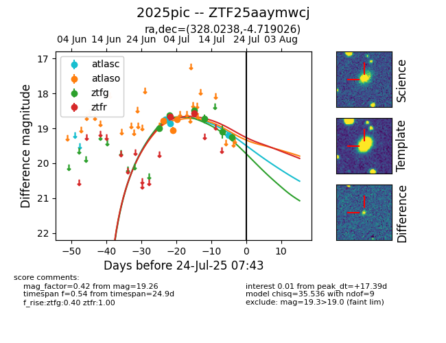

Target ZTF25aaymwcj at 2025-07-24 07:43, see:
FINK: fink-portal.org/ZTF25aaymwcj
Lasair: lasair-ztf.lsst.ac.uk/objects/ZTF25aaymwcj
ALeRCE: alerce.online/object/ZTF25aaymwcj
TNS: wis-tns.org/object/2025pic
YSE: ziggy.ucolick.org/yse/transient_detail/2025pic
alt names
ZTF25aaymwcj (ztf,fink)
2025pic (tns,yse)
coordinates:
equatorial (ra, dec) = (328.0238,-4.71903)
galactic (l, b) = (52.4466,-41.79693)
photometry
last atlasc=19.20, atlaso=18.75, ztfg=19.26, ztfr=18.57
3 atlasc, 3 atlaso, 6 ztfg, 2 ztfr detections
